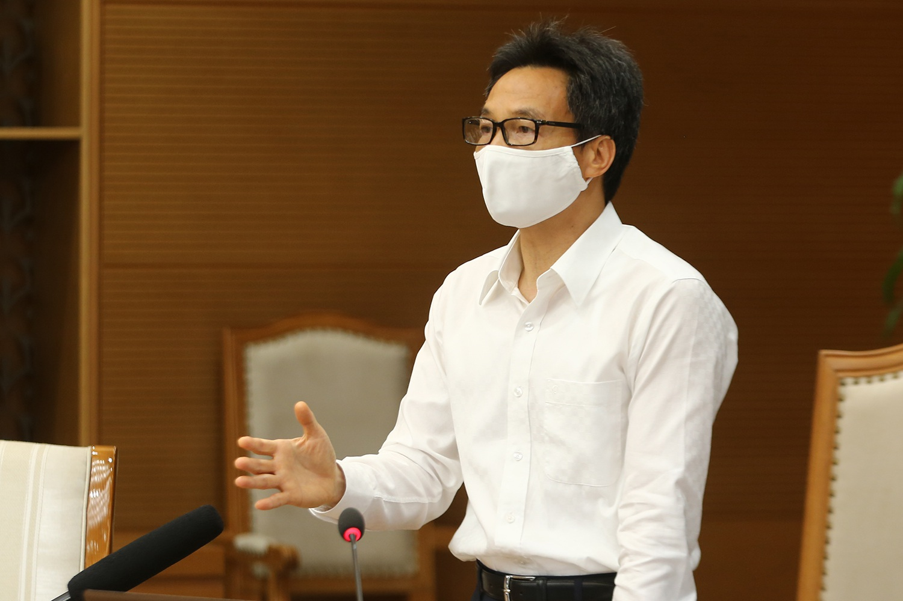

"Khả năng còn nguồn dịch khác trong cộng tđồng ngoài 3 nguồn hiện tại"
(Dân trí)-Phó hut tướng Vũ Đức Đàm điểm lại diễn biến 4 nguồn dịch ở Đà Nẵng, Yên Bái, Hải Dương, bệnh viện K, bệnh viện Nhiệt dới và lưu ý khả năng còn những nguồn dichj khác trong cộng đồng.
- Nơi nào đang phải cách lý xã hội vì Covid-19?
- Hà Nội: Những "điểm nóng" Covid-19 đang được phong toả, cách ly
|
TIN TỨC SỰ KIỆN
- Chủ tịch nước:"Làm chính sách từ cuộc sống, không phải trong phòng lạnh".
- Bí thư Hà Nội: Dập dịch nhưng không phong toả cực đoan, "ngăn sông cấm chợ".
- 4 nhân viên Bệnh viện CHợ Rẫy phản ứng nặng khi chích ngừa Covid-19.
- Hưng Yên: 2 ca dương tích với SARS-COV-2 là mẹ con.
- Ổ dịch huyện Thuận Thành lớn nhất nước: 90 ca dương tính Covid-19.
- Diễn biến dịch 10/05: Ca nhiễm mới tăng nhanh chưa từng có.
- Phó giám đốc công ty Nhật Cường lĩnh 13 năm tù.
- CSGT TPHCM nói gì về vụ tài xế lái siêu xe Ferrari bị còng tay?
- Hà Nội thêm 2 ca dương tính SARS-COV-2, một người từng du lịch Sapa.
- Ca sĩ Nguyệt Ánh - Phu nhân nhạc sĩ "Chiếc khăn piêu" qua đời.
|

|